QUESTION JOURNAL
대화의 흔적을 부드럽게 다시 읽기
질문을 보관함보다는 저널처럼 다루는 방향입니다. 브랜드 감성은 더 남지만, 정보 밀도는 낮아집니다.

COLLECTED THREADS
질문 저널
25개
선택한 질문을 다시 입력하기보다, 이어서 다시 생각하게 만드는 흐름에 더 어울립니다.
필터를 전체로 바꾸거나 다른 단어로 다시 찾아보세요.